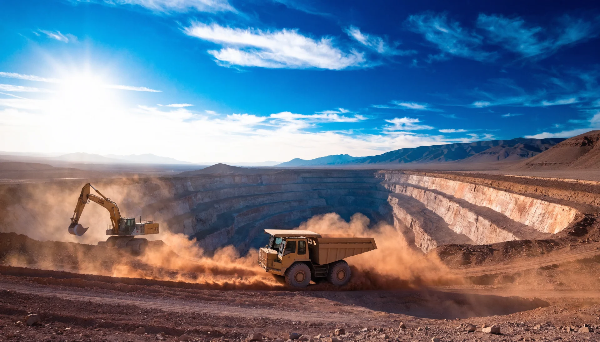
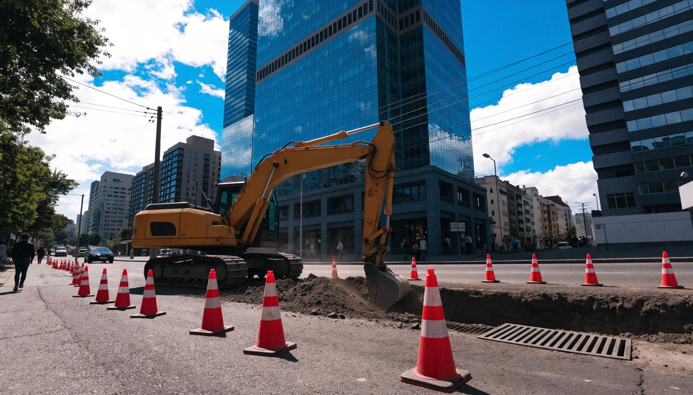
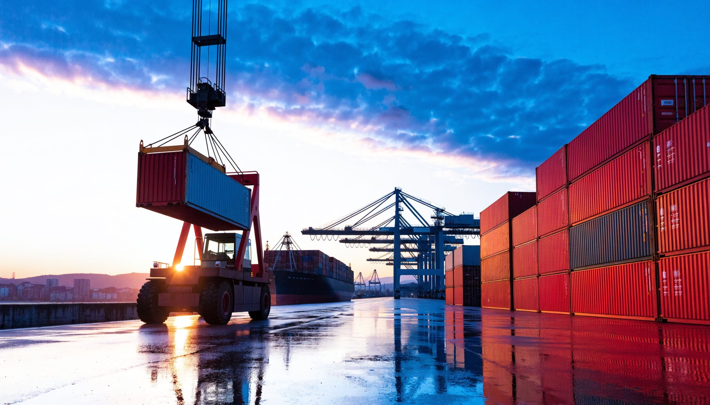
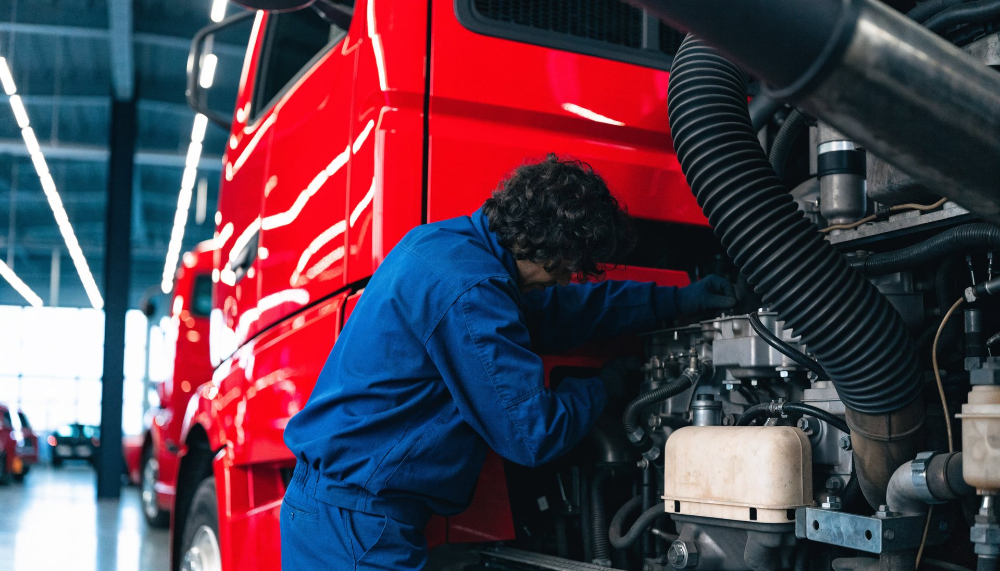
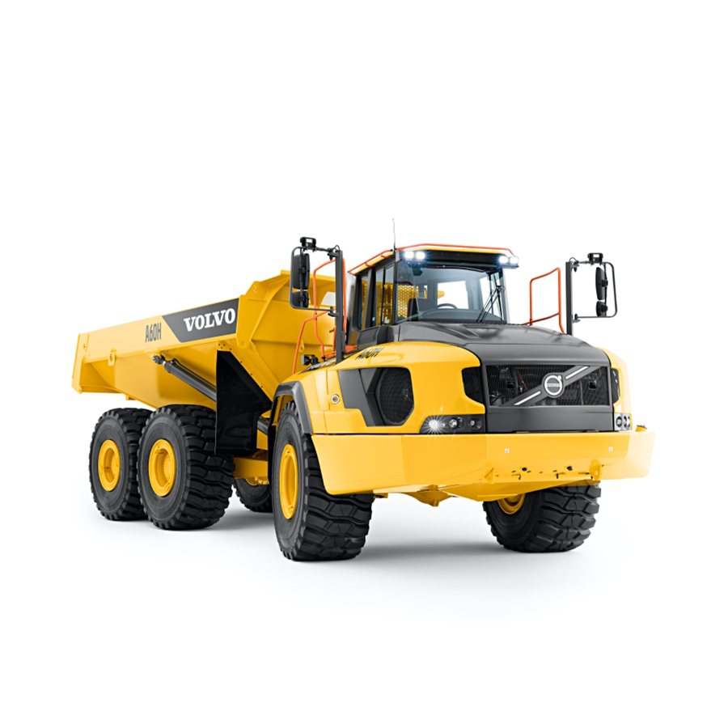

Cinco páginas completas y genuinamente distintas para SKC, con su azul y su rojo, sus tipografías IBM Plex Sans y Bebas Neue, y su contenido real: más de 30 marcas con los 23 logos que publica, 8 industrias, 9 servicios con sus destinos, 12 oficinas, más de 1.000 colaboradores y más de 50 años de Sigdo Koppers. Dos de marca, una inmersiva, una de conversión pura y un portal de compras con bolsa de cotización sobre su catálogo real. Y una muestra de lo que podemos crear en video.
Azul Sigdo Koppers, rojo SKC como único acento: la mina al atardecer, en video.
Su propia frase a 11 vw, las letras SKC como marca de agua, la misión que se enciende con el scroll, ocho industrias como capítulos con sus marcas reales, la hilera de 23 logos, los nueve servicios con sus destinos, Lean Kaizen y la historia.

Claro, tipo portal: las marcas reales por industria, con filtros que funcionan.
Treinta marcas con la descripción que SKC publica de cada una, filtros pegados arriba por las ocho industrias, y cada fila cotiza al canal correcto: venta, BeParts o lubricantes y neumáticos. Sin cuadrícula: filas editoriales con la placa del logo.

Las ocho industrias como capítulos a pantalla completa.
Minería, construcción, agro, forestal, transporte, industrial, portuario y repuestos, cada uno con sus marcas y el servicio que lo respalda. Las letras SKC crecen con el avance; un riel numera los frentes; video en tres capítulos.

Azul pleno, sin menú: el formulario entiende la necesidad y lleva al canal real.
Nuevo, arriendo, usado, repuestos, servicio técnico o capacitación; industria, marca y oficina. El mensaje se arma solo y el botón cambia de destino: venta de unidades, SK Rental, BeMarket, BeParts, servicio técnico o SKC Capacitación. Seis canales que se cargan al tocarlos; cinco preguntas frecuentes.

El portal de compras: buscador, filtros y una bolsa de cotización que se arma sola.
Sesenta y ocho equipos reales del catálogo de skc.cl con sus imágenes, buscador con sugerencias, filtros por industria, marca y tipo, seguimiento de equipos y una bolsa persistente que sale por correo a SKC. Con BeParts, BeMarket y SK Rental como portales hermanos en la misma cabecera.
Seis piezas de video hechas por Digitals para esta propuesta: tres loops para los heros de la web y tres piezas más, dos de ellas verticales para redes. Toque para pausar.
← deslice →
Sobre las imágenes y el video: las doce fotografías y los tres loops son piezas propias generadas por Digitals para SKC en su paleta. Los logos de marcas son los que skc.cl publica. Los datos, todos del sitio. La lista completa de las 12 oficinas regionales se carga por API en skc.cl y aquí se muestran las siete confirmadas.
Esto es un adelanto. Nos encantaría mostrarles el resto: cómo se vería cualquiera de las cuatro direcciones terminada, el plan de contenido en video y cómo se mide. Una reunión de 30 minutos basta.